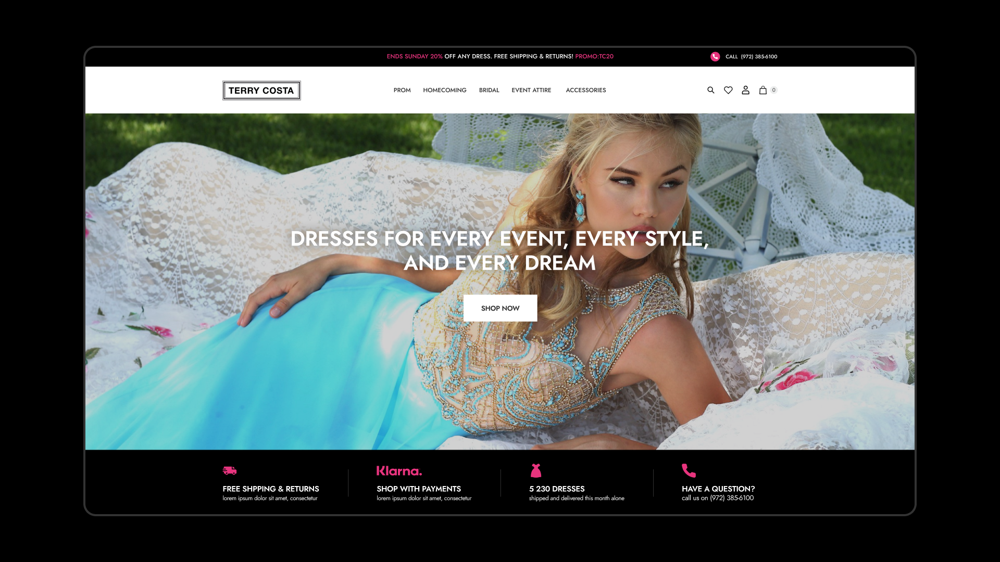
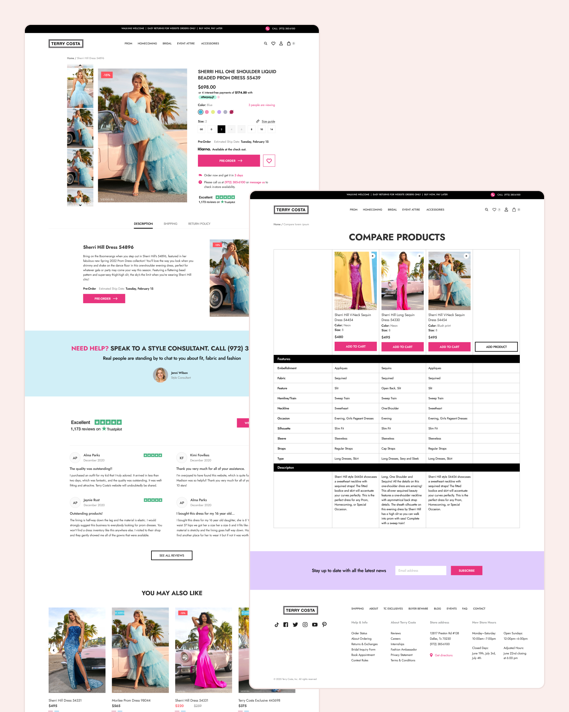
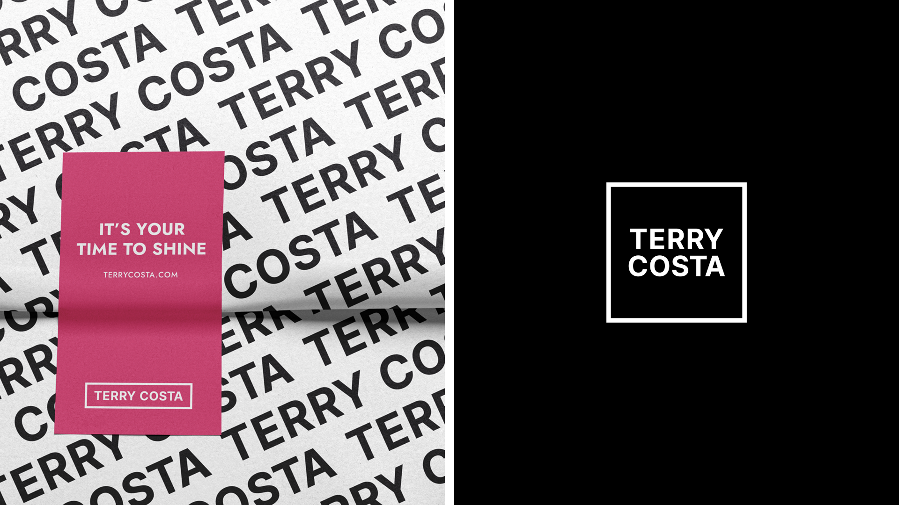
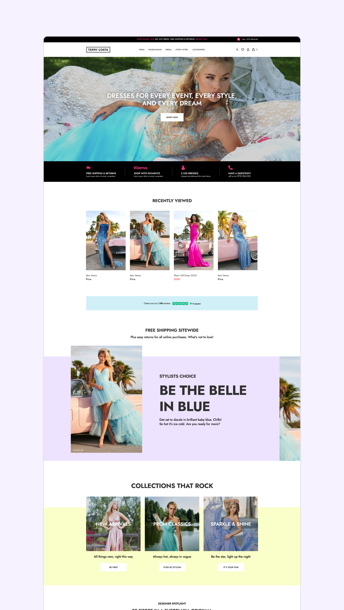
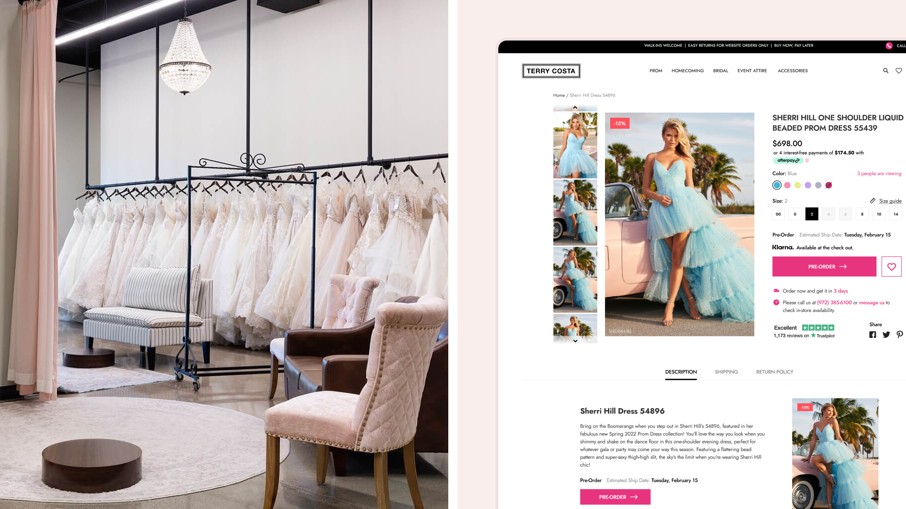
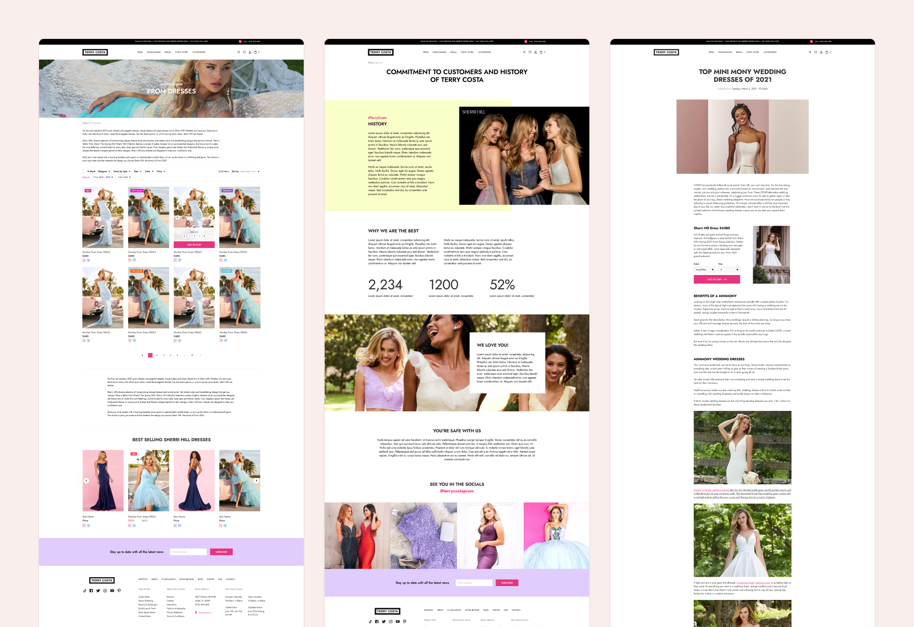

Terry Costa · via NewDay agency · Dallas, TX
One Identity, Every Touchpoint — From Homepage to Hang Tag
Rebuilding a prom, formal, and bridal retailer’s identity and storefront — from hero banner down to the hang tag.

Results
Consistent from homepage to hang tag
The rebuilt mark and palette hold their exact form across every touchpoint — hero banner, packaging, and the printed price tag.
A distinct look in a beige category
Black-and-purple replaces the nude-and-gold every competing bridal boutique defaults to.
Dedicated bridal flow
Its own filters — size, silhouette, fabric — separate from the prom and formal catalog.
Situation
Terry Costa’s identity hadn’t kept pace with the range it sold — prom, formal, and bridal in one catalog, but a wordmark and palette that didn’t scale cleanly from a hero banner down to a hang tag, and a default nude-and-gold formalwear look that read like every competitor.
Bridal in particular got no distinct treatment, buried in the same filters as prom and formal despite shoppers searching on entirely different criteria — silhouette and fabric, not just color and size.
Deciding insight
The fix wasn’t a new template — it was a mark that could hold its shape at every size the business actually used it at, and a palette that broke from formalwear’s default nude-and-gold.
That reframed the work around identity first: rebuild the logo on an 8px grid so it stayed crisp from a full-bleed hero down to a printed hang tag, then let a black-and-purple palette carry that distinctiveness across every template, including a bridal flow built to its own logic.
Research
Audited how competing formalwear and bridal retailers used color and photography, and confirmed nude-and-gold was the category default — the opening to differentiate with black-and-purple and full-bleed editorial fashion photography instead of studio product shots.


Approach
Rebuilt the logo on an 8px grid so it held its shape at every scale the business used it at — hero banner, nav, packaging, and the physical price tag — then built an editorial homepage around full-bleed fashion photography instead of studio product shots.
Gave the Collection page advanced filtering across 20+ styles per category, and split bridal into its own flow with filters built for how bridal shoppers actually search — size, silhouette, fabric — instead of reusing prom and formal’s filter set. Rolled the black-and-purple palette consistently from category pages through the brand story, best-sellers rail, and an editorial blog.



"Our journey with NewDay Agency was truly transformative. The team understood our vision and brought it to life with a stunning website that perfectly reflects the elegance and energy of Terry Costa."
Also on this engagement
Terry Costa’s staff also needed a way off two disconnected legacy systems for sales, stock, and vouchers — that’s a separate build: Terry Costa POS →